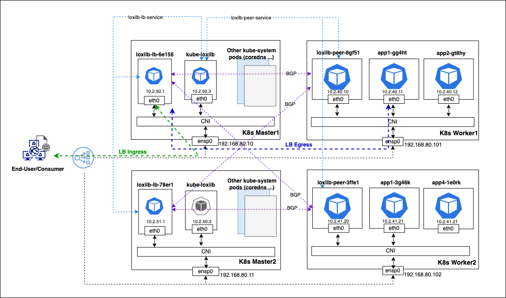

What is kube-loxilb ?
kube-loxilb is loxilb's implementation of kubernetes service load-balancer spec which includes support for load-balancer class, advanced IPAM (shared or exclusive) etc. kube-loxilb runs as a deloyment set in kube-system namespace. It is a control-plane component that always runs inside k8s cluster and watches k8s system for changes to nodes/end-points/reachability/LB services etc. It acts as a K8s Operator of loxilb. The loxilb component takes care of doing actual job of providing service connectivity and load-balancing. So, from deployment perspective we need to run kube-loxilb inside K8s cluster but we have option to deploy loxilb in-cluster or external to the cluster.
The preferred way is to run kube-loxilb component inside the cluster and provision loxilb docker in any external node/vm as mentioned in this guide. The rationale is to provide users a similar look and feel whether running loxilb in an on-prem or public cloud environment. Public-cloud environments usually run load-balancers/firewalls externally in order to provide a secure/dmz perimeter layer outside actual workloads. But users are free to choose any mode (in-cluster mode or external mode) as per convenience and their system architecture. The following blogs give detailed steps for :
This usually leads to another query - In external mode, who will be responsible for managing this entity ? On public cloud(s), it is as simple as spawning a new instance in your VPC and launch loxilb docker in it. For on-prem cases, you need to run loxilb docker in a spare node/vm as applicable. loxilb docker is a self-contained entity and easily managed with well-known tools like docker, containerd, podman etc. It can be independently restarted/upgraded anytime and kube-loxilb will make sure all the k8s LB services are properly configured each time. When deploying in-cluster mode, everything is managed by Kubernetes itself with little-to-no manual intervention.
Overall topology
- For external mode, the overall topology including all components should be similar to the following :

- For in-cluster mode, the overall topology including all components should be similar to the following :

How to deploy kube-loxilb ?
-
If you have chosen external-mode, please make sure loxilb docker is downloaded and installed properly in a node external to your cluster. One can follow guides here or refer to various other documentation . It is important to have network connectivity from this node to the k8s cluster nodes (where kube-loxilb will eventually run) as seen in the above figure. (PS - This step can be skipped if running in-cluster mode)
-
Download the kube-loxilb config yaml :
wget https://github.com/loxilb-io/kube-loxilb/raw/main/manifest/ext-cluster/kube-loxilb.yaml
- Modify arguments as per user's needs :
args:
- --loxiURL=http://12.12.12.1:11111
- --externalCIDR=123.123.123.1/24
#- --externalSecondaryCIDRs=124.124.124.1/24,125.125.125.1/24
#- --externalCIDR6=3ffe::1/96
#- --monitor
#- --setBGP=65100
#- --extBGPPeers=50.50.50.1:65101,51.51.51.1:65102
#- --setRoles=0.0.0.0
#- --setLBMode=1
#- --setUniqueIP=false
The arguments have the following meaning :
| Name | Description |
|---|---|
| loxiURL | API server address of loxilb. This is the docker IP address loxilb docker of Step 1. If unspecified, kube-loxilb assumes loxilb is running in-cluster mode and autoconfigures this. |
| externalCIDR | CIDR or IPAddress range to allocate addresses from. By default address allocated are shared for different services(shared Mode) |
| externalCIDR6 | Ipv6 CIDR or IPAddress range to allocate addresses from. By default address allocated are shared for different services(shared Mode) |
| monitor | Enable liveness probe for the LB end-points (default : unset) |
| setBGP | Use specified BGP AS-ID to advertise this service. If not specified BGP will be disabled. Please check here how it works. |
| extBGPPeers | Specifies external BGP peers with appropriate remote AS |
| setRoles | If present, kube-loxilb arbitrates loxilb role(s) in cluster-mode. Further, it sets a special VIP (selected as sourceIP) to communicate with end-points in full-nat mode. |
| setLBMode | 0, 1, 2 0 - default (only DNAT, preserves source-IP) 1 - onearm (source IP is changed to load balancer’s interface IP) 2 - fullNAT (sourceIP is changed to virtual IP) |
| setUniqueIP | Allocate unique service-IP per LB service (default : false) |
| externalSecondaryCIDRs | Secondary CIDR or IPAddress ranges to allocate addresses from in case of multi-homing support |
Many of the above flags and arguments can be overriden on a per-service basis based on loxilb specific annotation as mentioned below.
- kube-loxilb supported annotations:
| Annotations | Description |
|---|---|
| loxilb.io/multus-nets | When using multus, the multus network can also be used as a service endpoint.Register the multus network name to be used. Example: apiVersion: v1 kind: Service metadata: name: multus-service annotations: loxilb.io/multus-nets: macvlan1,macvlan2 spec: externalTrafficPolicy: Local loadBalancerClass: loxilb.io/loxilb selector: app: pod-01 ports: - port: 55002 targetPort: 5002 type: LoadBalancer |
| loxilb.io/num-secondary-networks | When using the SCTP multi-homing function, you can specify the number of secondary IPs(upto 3) to be assigned to the service. When used with the loxilb.io/secondaryIPs annotation, the value set in loxilb.io/num-secondary-networks is ignored. (loxilb.io/secondaryIPs annotation takes precedence) Example: metadata: name: sctp-lb1 annotations: loxilb.io/num-secondary-networks: “2” spec: loadBalancerClass: loxilb.io/loxilb selector: what: sctp-test ports: - port: 55002 protocol: SCTP targetPort: 9999 type: LoadBalancer |
| loxilb.io/secondaryIPs | When using the SCTP multi-homing function, specify the secondary IP to be assigned to the service. Multiple IPs(upto 3) can be specified at the same time using a comma(,). When used with the loxilb.io/num-secondary-networks annotation, loxilb.io/secondaryIPs takes priority.) Example: metadata: name: sctp-lb-secips annotations: loxilb.io/lbmode: "fullnat" loxilb.io/secondaryIPs: "1.1.1.1,2.2.2.2" spec: loadBalancerClass: loxilb.io/loxilb selector: what: sctp-lb-secips ports: - port: 56004 targetPort: 9999 protocol: SCTP type: LoadBalancer |
| loxilb.io/staticIP | Specifies the External IP to assign to the LoadBalancer service. By default, an external IP is assigned within the externalCIDR range set in kube-loxilb, but using the annotation, IPs outside the range can also be statically specified. Example: apiVersion: v1 kind: Service metadata: name: sctp-lb-fullnat annotations: loxilb.io/lbmode: "fullnat" loxilb.io/staticIP: "192.168.255.254" spec: loadBalancerClass: loxilb.io/loxilb externalTrafficPolicy: Local selector: what: sctp-fullnat-test ports: - port: 56004 protocol: SCTP targetPort: 9999 type: LoadBalancer |
| loxilb.io/liveness | Set LoxiLB to perform a health check (probe) based endpoint selection(If flag is set, only active endpoints will be selected). The default value is no, and when the value is set to yes, the probe function of the corresponding service is activated. Example: apiVersion: v1 kind: Service metadata: name: sctp-lb-fullnat annotations: loxilb.io/liveness : "yes" spec: loadBalancerClass: loxilb.io/loxilb externalTrafficPolicy: Local selector: what: sctp-fullnat-test ports: - port: 56004 protocol: SCTP targetPort: 9999 type: LoadBalancer |
| loxilb.io/lbmode | Set LB mode individually for each service. There are three types of values that can be specified: “default”, “onearm”, and “fullnat”. Please refer to this document for more details. Example: apiVersion: v1 kind: Service metadata: name: sctp-lb-fullnat annotations: loxilb.io/lbmode: "fullnat" spec: loadBalancerClass: loxilb.io/loxilb externalTrafficPolicy: Local selector: what: sctp-fullnat-test ports: - port: 56004 protocol: SCTP targetPort: 9999 type: LoadBalancer |
| loxilb.io/ipam | Specify which IPAM mode the service will use. Select one of three options: “ipv4”, “ipv6”, or “ipv6to4”. Example: apiVersion: v1 kind: Service metadata: name: sctp-lb annotations: loxilb.io/ipam : "ipv4" spec: loadBalancerClass: loxilb.io/loxilb externalTrafficPolicy: Local selector: what: sctp-lb ports: - port: 56004 protocol: SCTP targetPort: 9999 type: LoadBalancer |
| loxilb.io/timeout | Set the session retention time for the service. Example: apiVersion: v1 kind: Service metadata: name: sctp-lb annotations: loxilb.io/timeout : "60" spec: loadBalancerClass: loxilb.io/loxilb externalTrafficPolicy: Local selector: what: sctp-lb ports: - port: 56004 protocol: SCTP targetPort: 9999 type: LoadBalancer |
| loxilb.io/probetype | Specifies the protocol type to use for endpoint probe operations. You can select one of “udp”, “tcp”, “https”, “http”, “sctp”, “ping”, or “none”. Probetype is set to protocol type, if you are using lbMode as "fullnat" or "onearm". To set it off, use probetype : "none" Example: apiVersion: v1 kind: Service metadata: name: sctp-lb annotations: loxilb.io/probetype : "ping" spec: loadBalancerClass: loxilb.io/loxilb externalTrafficPolicy: Local selector: what: sctp-lb ports: - port: 56004 protocol: SCTP targetPort: 9999 type: LoadBalancer |
| loxilb.io/probeport | Set the port to use for probe operation. It is not applied if the loxilb.io/probetype annotation is not used or if it is of type icmp or none. Example: apiVersion: v1 kind: Service metadata: name: sctp-lb annotations: loxilb.io/probetype : "tcp" loxilb.io/probeport : "3000" spec: loadBalancerClass: loxilb.io/loxilb externalTrafficPolicy: Local selector: what: sctp-lb ports: - port: 56004 protocol: SCTP targetPort: 9999 type: LoadBalancer |
| loxilb.io/probereq | Specifies API for the probe request. It is not applied if the loxilb.io/probetype annotation is not used or if it is of type icmp or none. Example: apiVersion: v1 kind: Service metadata: name: sctp-lb annotations: loxilb.io/probetype : "tcp" loxilb.io/probeport : "3000" loxilb.io/probereq : "health" spec: loadBalancerClass: loxilb.io/loxilb externalTrafficPolicy: Local selector: what: sctp-lb ports: - port: 56004 protocol: SCTP targetPort: 9999 type: LoadBalancer |
| loxilb.io/proberesp | Specifies the response to the probe request. It is not applied if the loxilb.io/probetype annotation is not used or if it is of type icmp or none. Example: apiVersion: v1 kind: Service metadata: name: sctp-lb annotations: loxilb.io/probetype : "tcp" loxilb.io/probeport : "3000" loxilb.io/probereq : "health" loxilb.io/proberesp : "ok" spec: loadBalancerClass: loxilb.io/loxilb externalTrafficPolicy: Local selector: what: sctp-lb ports: - port: 56004 protocol: SCTP targetPort: 9999 type: LoadBalancer |
| loxilb.io/probetimeout | Specifies the timeout for starting a probe request (in seconds). The default value is 60 seconds Example: apiVersion: v1 kind: Service metadata: name: sctp-lb annotations: loxilb.io/liveness : "yes" loxilb.io/probetimeout : "10" spec: loadBalancerClass: loxilb.io/loxilb externalTrafficPolicy: Local selector: what: sctp-lb ports: - port: 56004 protocol: SCTP targetPort: 9999 type: LoadBalancer |
| loxilb.io/proberetries | Specifies the number of probe request retries before considering an endpoint as inoperative. The default value is 2 Example: apiVersion: v1 kind: Service metadata: name: sctp-lb annotations: loxilb.io/liveness : "yes" loxilb.io/probetimeout : "10" loxilb.io/proberetries : "3" spec: loadBalancerClass: loxilb.io/loxilb externalTrafficPolicy: Local selector: what: sctp-lb ports: - port: 56004 protocol: SCTP targetPort: 9999 type: LoadBalancer |
| loxilb.io/epselect | Specifies the algorithm for end-point slection e.g "rr", "hash", "persist", "lc" etc. The default value is roundrobin. Example: apiVersion: v1 kind: Service metadata: name: sctp-lb annotations: loxilb.io/liveness : "yes" loxilb.io/probetimeout : "10" loxilb.io/proberetries : "3" loxilb.io/epselect : "hash" spec: loadBalancerClass: loxilb.io/loxilb externalTrafficPolicy: Local selector: what: sctp-lb ports: - port: 56004 protocol: SCTP targetPort: 9999 type: LoadBalancer |
- Apply the yaml after making necessary changes :
kubectl apply -f kube-loxilb.yaml
- The above should make sure kube-loxilb is successfully running. Check kube-loxilb is running :
k8s@master:~$ sudo kubectl get pods -A
NAMESPACE NAME READY STATUS RESTARTS AGE
kube-system local-path-provisioner-84db5d44d9-pczhz 1/1 Running 0 16h
kube-system coredns-6799fbcd5-44qpx 1/1 Running 0 16h
kube-system metrics-server-67c658944b-t4x5d 1/1 Running 0 16h
kube-system kube-loxilb-5fb5566999-ll4gs 1/1 Running 0 14h
- Finally to create service LB for a workload, we can use and apply the following template yaml
(Note - Check loadBalancerClass and other loxilb specific annotation) :
apiVersion: v1
kind: Service
metadata:
name: iperf-service
annotations:
# If there is a need to do liveness check from loxilb
loxilb.io/liveness: "yes"
# Specify LB mode - one of default, onearm or fullnat
loxilb.io/lbmode: "default"
# Specify loxilb IPAM mode - one of ipv4, ipv6 or ipv6to4
loxilb.io/ipam: "ipv4"
# Specify number of secondary networks for multi-homing
# Only valid for SCTP currently
# loxilb.io/num-secondary-networks: "2
# Specify a static externalIP for this service
# loxilb.io/staticIP: "123.123.123.2"
spec:
loadBalancerClass: loxilb.io/loxilb
selector:
what: perf-test
ports:
- port: 55001
targetPort: 5001
type: LoadBalancer
---
apiVersion: v1
kind: Pod
metadata:
name: iperf1
labels:
what: perf-test
spec:
containers:
- name: iperf
image: eyes852/ubuntu-iperf-test:0.5
command:
- iperf
- "-s"
ports:
- containerPort: 5001
Users can change the above as per their needs.
- Verify LB service is created
k8s@master:~$ sudo kubectl get svc
NAME TYPE CLUSTER-IP EXTERNAL-IP PORT(S) AGE
kubernetes ClusterIP 10.43.0.1 <none> 443/TCP 13h
iperf1 LoadBalancer 10.43.8.156 llb-192.168.80.20 55001:5001/TCP 8m20s
- For more example yaml templates, kindly refer to kube-loxilb's manifest directory
Additional steps to deploy loxilb (in-cluster) mode
To run loxilb in-cluster mode, the URL argument in kube-loxilb.yaml needs to be commented out:
args:
#- --loxiURL=http://12.12.12.1:11111
- --externalCIDR=123.123.123.1/24
This enables a self-discovery mode of kube-loxilb where it can find and reach loxilb pods running inside the cluster. Last but not the least we need to create the loxilb pods in cluster :
sudo kubectl apply -f https://github.com/loxilb-io/kube-loxilb/raw/main/manifest/in-cluster/loxilb.yaml
Once all the pods are created, the same can be verified as follows (you can see both kube-loxilb and loxilb components running:
k8s@master:~$ sudo kubectl get pods -A
NAMESPACE NAME READY STATUS RESTARTS AGE
kube-system local-path-provisioner-84db5d44d9-pczhz 1/1 Running 0 16h
kube-system coredns-6799fbcd5-44qpx 1/1 Running 0 16h
kube-system metrics-server-67c658944b-t4x5d 1/1 Running 0 16h
kube-system kube-loxilb-5fb5566999-ll4gs 1/1 Running 0 14h
kube-system loxilb-lb-mklj2 1/1 Running 0 13h
kube-system loxilb-lb-stp5k 1/1 Running 0 13h
kube-system loxilb-lb-j8fc6 1/1 Running 0 13h
kube-system loxilb-lb-5m85p 1/1 Running 0 13h
Thereafter, the process of service creation remains the same as explained in previous sections.